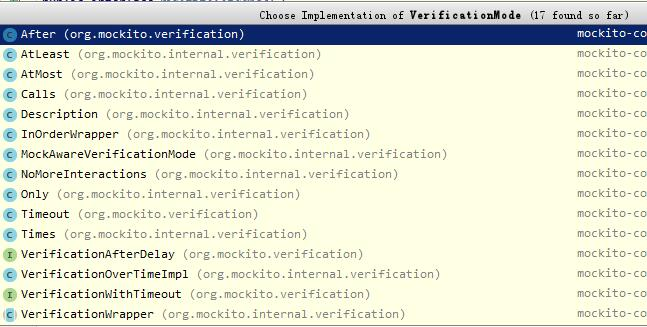

之前写的JUnit框架单元测试的最后留了一个悬念，今天我们把这个问题解决下，首先我们要理解mock的概念，然后学习使用mock来做单元测试。关于Mock的框架有很多，比如Mockito、PowerMock、EasyMock等等，本文主要介绍Mockito的用法，各种框架的对比不在本文阐述范围，而且此类框架大体相同，只需要学习其中一个就能轻松地学习其他框架，没必要纠结那个框架才是最好的。
首先要明白什么是Mock，为什么要Mock，Mock能干什么这三个问题。Mock的中文意思是“模仿”，Mock就是去构造（模仿）一个虚拟的对象，而这个对象通常比较难直接创建，有了Mock可以轻松地帮助你对复杂的功能解耦，实现单元测试。比如前文最后留下的Log类，你会发现它依赖于Android运行环境，很难把整个依赖树都构建出来，所以我们需要Mock。
Android上集成非常简单，在app项目下的build.gradle添加测试编译依赖(下面采用2.x最新版本)：
dependencies {
//...
testCompile "org.mockito:mockito-core:2.+"
}
然后使用Gradle Sync一下即可。顺便附上Mockito的Jcenter地址：http://jcenter.bintray.com/org/mockito/mockito-core/
下面来使用Mockito验证互动功能，比如说验证TextView的setText方法交互情况：
TextView mockedTextView = Mockito.mock(TextView.class);
mockedTextView.setText("test");
Mockito.verify(mockedTextView).setText("test");
上述代码的mock方法用于“模仿”一个对象并返回这个对象，而verify方法则是用于验证“模仿对象”的互动。特别注意：如果你使用mockedTextView.getText()获取设置的值会发现返回值为null
上面最后说到mockedTextView.getText()会返回一个null，假设我们需要测试mockedTextView.getText()返回值是否正确怎么处理呢？Mockito给我们设置方法桩功能。简单来说就是“指定方法返回的结果”，比如下面代码：
TextView mockedTextView = Mockito.mock(TextView.class);
Mockito.when(mockedTextView.getText()).thenReturn("test");
System.out.println(mockedTextView.getText());
上述代码用when方法指定要设置桩的方法，thenReturn来指定返回值，测试后发现输出为“test”，表明设置方法桩成功。值得注意的时候，给方法设置桩可以设置多次，只会返回最后一次设置的值。
除了when...thenReturn的写法外，还有doRetrun...when的写法，代码如下：
Mockito.doReturn("123").when(mockedTextView).getText();
细心的读者会发现verify方法重载里另外一个带VerificationMode参数的方法。这个参数用于设置验证模式，比如说需要验证方法执行了多少次。
VerificationMode是一个接口，我们可以看看源码中实现这个接口的类来学习它的用法：  比如Mockito.times(1)代表验证方法执行了1次：
Mockito.verify(mockedTextView,Mockito.times(1)).getText();
其他的验证模式也是大体相同的用法，具体可以参考类的说明。
注意默认没有验证模式的verify方法使用的默认验证模式就是Mockito.times(1)。
有时候我们不关心输入，比如说setText()方法:
TextView mockedTextView = Mockito.mock(TextView.class);
mockedTextView.setText("test");
Mockito.verify(mockedTextView).setText(Mockito.anyString());
上述的Mockito.anyString()就是一个参数匹配器，值得注意的是，默认的验证模式是Mockito.times(1)，如果使用了参数匹配器，注意调用次数，否则回报：org.mockito.exceptions.verification.TooManyActualInvocations，下面是调用两次的正确例子：
TextView mockedTextView = Mockito.mock(TextView.class);
mockedTextView.setText("test");
mockedTextView.setText("abc");
Mockito.verify(mockedTextView, Mockito.times(2)).setText(Mockito.anyString());
由于参数匹配器的种类太多，这里就不一样列举了，可以参考ArgumentMatchers类找到各种匹配器。
若果需要某个方法抛出异常，可以使用下面的方法：
//void返回方法
Mockito.doThrow(new RuntimeException()).when(mockedTextView).setText("abc");
//非void返回方法
Mockito.when(mockedTextView.getText()).thenThrow(new RuntimeException());
其中注意区分不同返回类型的写法不同。另外如果需要防止异常中断执行，可以在增加一个doNothing方法，代码如下：
Mockito.doNothing().doThrow(new NullPointerException()).when(mockedTextView).setText("abc");
可以看到上述代码，只有Void返回类型方法才能使用doNothing()
对于一个方法设置桩when...thenXxx或者doXxxx...when的组合外，Mockito给了一个自定义应答的的方法让我们自定义方法应答的内容。试想一下，假设有一个异步方法（当然返回类型就是Void）的回调中有多个回调，当你想指定执行某个回调之前学到的显然就不那么容易实现了。如果自定义Answer内容，那将是非常简单的，示例代码如下：
Mockito.doAnswer(new Answer() {
@Override
public Object answer(InvocationOnMock invocationOnMock) throws Throwable {
//获取第一个参数
Object callback = invocationOnMock.getArgument(0);
//指定回调执行操作
return callback.onFinished();
}
}).when(mockedClass.asyncRequset(callback));//执行一步操作
或者举一个简单的例子(采用when...thenAnswer方式)：
Mockito.when(mockedTextView.getText()).thenAnswer(new Answer<String>() {
@Override
public String answer(InvocationOnMock invocationOnMock) throws Throwable {
System.out.println("custom answer");
return "test";
}
});
System.out.print(mockedTextView.getText());
很明显，这里最终输出为:
custom answer
test
要知道如果Mock一个对象后，这个Mock对象对于所有非Void返回方法将返回默认值（对象则返回null），所有Void方法将什么都不做。如果要保留原来对象的功能，而仅仅修改一个或几个方法的返回值，可以采用Spy方法，具体代码如下：
ArrayList spyArray = Mockito.spy(new ArrayList());
spyArray.add(2);
spyArray.add(2);
Mockito.when(spyArray.get(0)).thenReturn(1);//注意书写位置，否则报IndexOutOfBound
System.out.println(spyArray.get(0));//输出1
System.out.print(spyArray.get(1));//输出2
上述代码可以看到Spy方法没有改变ArrayList里的方法，只是当get(0)时返回1，其他方法执行逻辑还是ArrayList中的逻辑。
特别注意这个Spy方法看上去似乎很方便，实际上如果你Spy一个需要Mock的对象，就会提示你该对象没有Mock，就比如TextView。
使用@Mock可以帮我们快速Mock对象：
public class AnnotationTest {
@Mock
private TextView mockedTextView;
@Before
public void setup() {
MockitoAnnotations.initMocks(this);//初始化所有Mock注解
}
//...
}
如果觉得写setup方法比较麻烦，可以去掉并使用Mockito自带的JUnit Rule帮我们自动完成：
public class AnnotationTest {
@Rule
public MockitoRule mockitoRule = MockitoJUnit.rule();
@Mock
private TextView mockedTextView;
//...
}
如果没有使用JUnit Runner，可以直接使用Mockito提供的JUnitRunner（Runner相当于一个容器，负责处理你的测试代码）：
@RunWith(MockitoJUnitRunner.class)
public class AnnotationTest {
@Mock
private TextView mockedTextView;
//...
}
另外Mockito还提供了其他注解，例如@Spy，这个可以用于无参构造的类初始化Spy，所以实用性并不高，其他一些不常用的这里就不介绍了。
实际上即使你看完前面全部内容，还是不能解决我们上一篇文章最后提到的那个问题，因为Mockito不支持静态方法的Mock！
要Mock静态方法有两个方法，一个是使用PowerMock来扩展Mockito，另外一个就是创建一个StaticWrapper来把静态方法变成非静态方法，方法如下：
public class LogTest {
class StaticWrapper {//包裹静态方法为非静态方法
void i(String tag, String msg) {
Log.i(tag, msg);
}
}
@Test
public void test() {
StaticWrapper mockedLog = Mockito.mock(StaticWrapper.class);
mockedLog.i("test", "test");
Mockito.verify(mockedLog).i("test", "test");
}
}
上文介绍了Mockito所有基本用法，但是这还不是Mockito的全部，感兴趣的可以自己深入研究一下，例如InOrder的用法等等。虽然我们已经学会了Mockito和JUnit，但是要在JVM上测试Android代码（比如要测试Activity的生命周期），显然之前学的无法解决这个问题。这里又留下一个悬念，下篇文章我们再来探讨这个问题。
Android单元测试之JUnit框架： https://maxwell-nc.github.io/android/junitTest.html
Android单元测试之Mockito框架： https://maxwell-nc.github.io/android/mockitoTest.html
Android单元测试之Robolectric框架： https://maxwell-nc.github.io/android/robolectricTest.html
Android单元测试之AssertJ框架： https://maxwell-nc.github.io/android/assertjTest.html
原创文章，欢迎转载，请保留出处。有任何错误、疑问或者建议，欢迎指出。
请注明文章出自于：https://maxwell-nc.github.io/android/mockitoTest.html